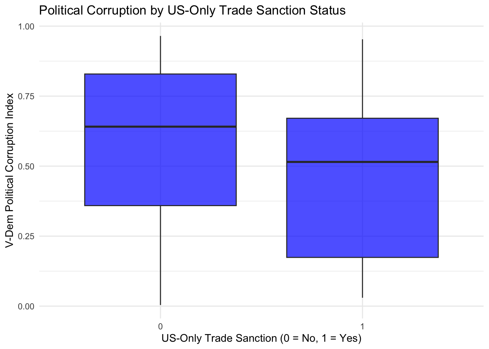
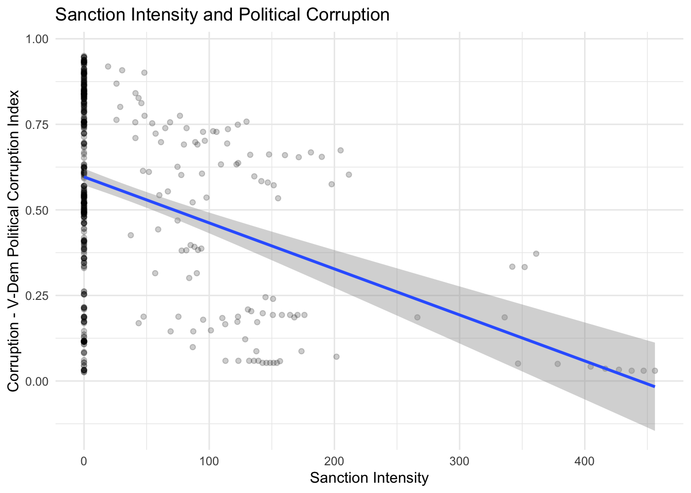
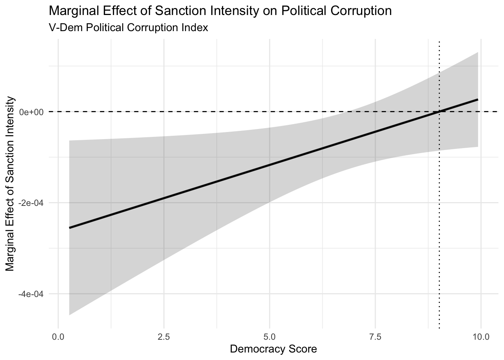
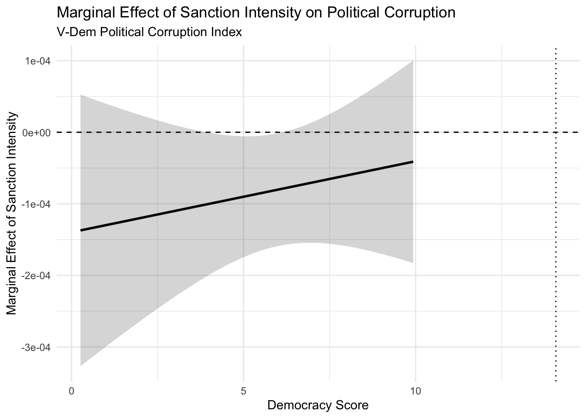
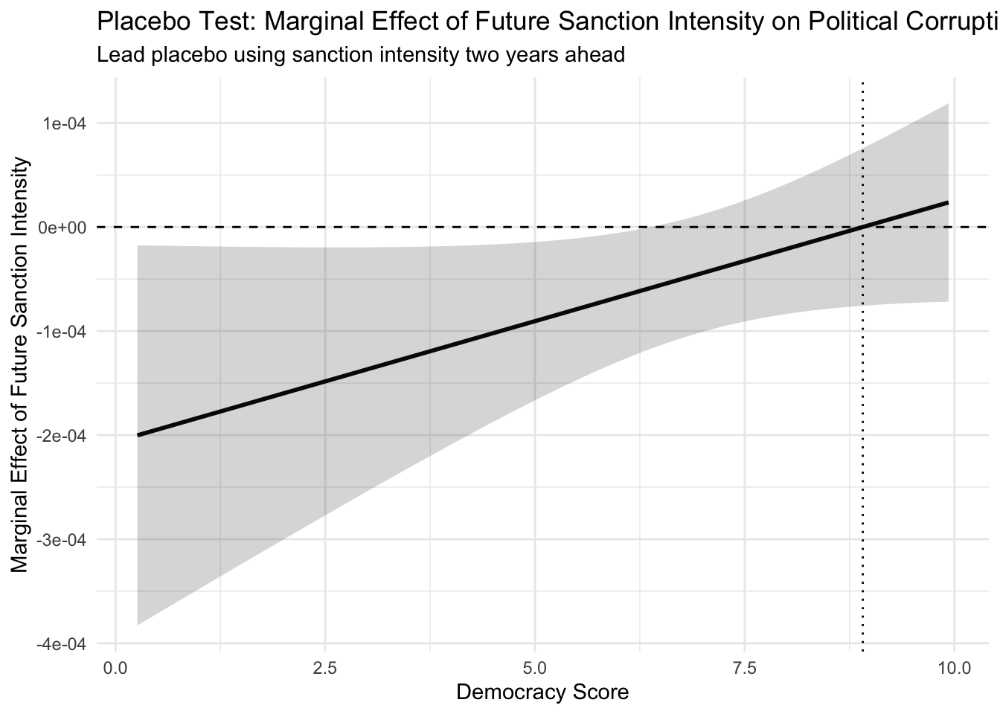

| Variable | Mean | Minimum | Maximum | Range | Standard Deviation |
|---|---|---|---|---|---|
| Corruption | 0.554 | 0.004 | 0.965 | 0.961 | 0.297 |
| Sanction Dummy | 0.104 | 0.000 | 1.000 | 1.000 | 0.305 |
| Sanction Intensity | 31.966 | 0.000 | 456.021 | 456.021 | 74.765 |
| Sanction Duration | 0.888 | 0.000 | 61.000 | 61.000 | 4.532 |
| Democracy Score | 5.298 | 0.260 | 9.930 | 9.670 | 2.132 |
| GDP Growth | 3.592 | -50.339 | 86.827 | 137.165 | 5.834 |
| Log GDP per Capita | 4.040 | 2.996 | 5.163 | 2.167 | 0.508 |
| Political Stability | -0.349 | -2.711 | 1.496 | 4.207 | 0.875 |
| Trade Openness | 76.504 | 2.474 | 258.780 | 256.307 | 38.311 |
| One Year Lagged Trade Openness | 79.471 | 14.578 | 242.361 | 227.783 | 50.321 |
Final Presentation Research Design
Abstract
This paper examines whether U.S.-only trade sanctions affect political corruption, and whether these effects vary across regime type. Using a country-year panel of ever-sanctioned countries from 2003–2023, I construct a continuous sanctions-intensity measure combining sanctions status, pre-sanction trade openness, and sanction duration in order to move beyond the binary sanctions indicators commonly used in the literature. Corruption is measured using V-Dem’s Political Corruption Index, while the empirical strategy relies on two-way fixed effects models, interaction terms for democracy, placebo lead tests, and country-specific time trends as robustness checks. Initial results suggest a statistically significant negative relationship between sanctions intensity and corruption in less democratic regimes, contrary to the paper’s original hypothesis. However, these findings weaken substantially once country-specific time trends are introduced, while placebo tests remain significant, raising concerns about pre-existing institutional trajectories and time-varying confounders. Overall, the paper finds limited evidence that more intense U.S.-only trade sanctions systematically increase corruption, and calls for the usage of continuous sanction-intensity measures combined with more viable methods such as difference-in-difference panel tests or event studies to gain a casual vantage point.
(1) Introduction
Research Question
This project will attempt to explore and answer the question, “Do economic sanctions imposed by the United States from 2003 to 2023 affect the level of corruption in recipient countries?”
This question is increasingly important because sanctions continue to be one of the primary foreign policy tools used by the United States and other major powers, often justified as mechanisms for promoting institutional reform, accountability, or political change. However, if sanctions instead worsen corruption or weaken already fragile institutions, especially in less democratic states, then they may unintentionally reinforce many of the governance problems they are meant to combat.
Existing research generally finds that economic sanctions tend to increase corruption in target countries through the distortion of economic activity and the expansion of opportunities for rent-seeking behavior. For example, Dreher, Gassebner, and Siemers (2017) [Dreher, Gassebner, and Siemers (2017)] find that sanctions are associated with significantly higher levels of corruption, particularly in more autocratic regimes, and through their panel analysis with country and year fixed effects argue that sanctions restrict formal economic channels in ways that increase scarcity and discretionary power among political officials, thus fostering bribery, patronage, and informal exchange. Similarly, Neuenkirch and Neumeier (2016) (Neuenkirch and Neumeier 2016) show that U.S. sanctions lead to substantial declines in economic growth in targeted countries, and while their study focuses more on macroeconomic outcomes than corruption directly, it still provides an important mechanism through which sanctions may weaken institutions and shift economic activity into informal sectors commonly associated with corruption and weaker oversight. Taken together, the existing literature broadly points toward the idea that sanctions may unintentionally worsen corruption by weakening formal markets and institutional accountability, especially in institutionally weaker or less democratic states.
However, one major limitation in this literature, at least as to how sanctions are actually operationalized, is that much of the existing work, including Dreher, Gassebner, and Siemers (2017) (Dreher, Gassebner, and Siemers 2017), Hufbauer et al. (2007) [Hufbauer et al. (2007)], and Morgan, Bapat, and Kobayashi (2014) (Morgan, Bapat, and Kobayashi 2014), relies primarily on binary indicators for whether a country is sanctioned or not. In practice, this means sanctions are often treated as roughly equivalent regardless of how economically disruptive they actually are, how long they persist, or how exposed a country is to trade in the first place. At the same time, these studies generally use similar country-level controls like GDP per capita, economic growth, trade openness, and political stability for the purpose of isolating institutional effects, but the sanctions treatment itself remains relatively blunt. As a result, the literature gives us a fairly strong understanding that sanctions matter, but much less understanding regarding whether stronger or more economically disruptive sanctions generate meaningfully different corruption outcomes.
Some work in the broader sanctions and trade literature has started moving toward more continuous measures of sanctions exposure. For example, Crozet and Hinz (2020) [Crozet and Hinz (2020)] and Felbermayr et al. (2020) (Felbermayr et al. 2020) measure sanctions in terms of trade losses or reductions in economic flows, while other studies incorporate duration or financial restrictions as proxies for sanctions intensity. However, these approaches have rarely been applied directly to corruption outcomes specifically, and there remains relatively limited work constructing a continuous sanctions-intensity measure that jointly captures both exposure and duration when studying corruption.
This project attempts to address that gap by constructing a sanctions-intensity measure scaled by pre-sanction trade openness and sanction duration, for the purpose of capturing not just whether sanctions exist, but also the extent to which they plausibly disrupt the economy over time. Rather than asking only whether sanctions increase corruption, the analysis instead examines whether more economically disruptive sanctions generate different corruption effects across regime types. In doing so, the project attempts to extend the existing sanctions-corruption literature by moving beyond binary sanctions indicators and toward a more continuous measure of sanctions exposure, persistence, and economic disruption.
(2) Theory and Hypotheses
I shall test for two hypothesis:
i) U.S. economic sanctions on average increase corruption from 2003-2023 in recipient countries.
ii)) US economic sanctions will increase corruption more strongly in autocracies and weaker or negative effects in democracies.
The impact of economic sanctions on corruption does not have a single clear mechanism, either intuitively or empirically. Existing research suggests two competing pathways. In cash-strapped and institutionally weak countries, sanctions may worsen corruption by reducing trade and economic growth, shifting activity into informal and illicit markets (Afesorgbor and Mahadevan 2016; Neuenkirch and Neumeier 2016)(Neuenkirch and Neumeier 2016). Under these conditions, political elites retain centralized control over scarce resources such as import licenses and foreign currency, allowing them to distribute access selectively in exchange for bribes. Empirical evidence supports this mechanism, showing that sanctions are associated with higher corruption levels, particularly in countries with weaker institutional constraints (Dreher, Gassebner, and Siemers 2017)(Dreher, Gassebner, and Siemers 2017). Sanctions also often generate evasion networks reliant on bribery and informal exchange, further embedding corruption into state structures (Early 2015). At the same time, democratic systems may react differently. Where institutions impose greater accountability and transparency, sanctions can trigger reforms, external monitoring, and tighter oversight. Recent research finds that under these conditions corruption can decline over time (Gutmann, Langer, and Neumeier 2024).
However, much of the existing literature treats sanctions as binary, measuring only whether a sanction exists in a given country-year(Dreher, Gassebner, and Siemers 2017), (Hufbauer et al. 2007) (Morgan, Bapat, and Kobayashi 2014). I extend this approach by focusing on sanction intensity rather than sanction presence alone. My argument is that increases in sanction intensity should increase corruption more strongly in autocracies than in democracies because intensity better captures the extent to which sanctions actually disrupt the economy. A marginal increase in sanction intensity, through greater trade exposure or longer duration, should amplify scarcity and economic distortions more severely in autocratic systems, where weaker institutions and lower oversight allow officials to exploit these conditions through rent-seeking, informal markets, and untracked transactions. Democratic regimes, by contrast, possess stronger institutional checks, greater transparency, and higher accountability, which may dampen how much these economic shocks translate into corruption and, in some cases, may even reduce corruption through reforms or tighter enforcement. Thus, the same increase in sanction intensity should have a smaller or more muted effect in democracies. To address reverse causality, I also implement placebo tests using led sanctions as a predictor to test whether sanctions are simply responding to already rising corruption levels rather than causing them. Therefore, the main hypothesis of interest is the second hypothesis on heterogeneous regime-type effects of sanctions on corruption.
(3) Research Design
Data
This project uses a country-year panel from 2003 to 2023 to estimate the relationship between unilateral U.S. trade sanctions and political corruption. The unit of observation is the country-year. The outcome variable, sanctions variables, and country-level covariates are drawn from cross-national datasets that provide annual coverage across most sovereign states.
V-Dem Political Corruption Index The dependent variable of corruption is pulled from the V-Dem Political Corruption Index (v2x_corr column). This index measures the pervasiveness of political corruption across multiple state institutions and expert-coded integrators via panel analysis. V-Dem constructs the index from indicators covering corrupt activity in the legislature, judiciary, executive, and public sector. This composition makes the index appropriate for this study because the theorized mechanisms linking sanctions to corruption operate through political and administrative channels.
U.S.-Only Trade Sanctions (Global Sanctions Database)(Felbermayr et al. 2020): The main independent variable is a U.S.-only trade sanctions indicator, constructed from the Global Sanctions DataBase. The GSDB records sanctions by sender, target, year, sanction type, political objective, and success. I restrict the sanctions data to cases where the United States is the sole sender to form the treatment, or the country has been sanctioned in the past by any actor to eliminate 0-heavy sample. I also hone my sample down to where the sanction type is trade-related, as trade sanctions and resource-related channels are my mechanisms of interest, especially in their plausible relation to rent-seeking and corruption. The GSDB is well suited for this construction because it explicitly distinguishes bilateral, multilateral, and plurilateral sanctions and classifies sanctions by type, including trade sanctions, financial sanctions, travel restrictions, arms sanctions, military assistance sanctions, and other sanctions.
EIU Democracy Index: Regime type is measured using the Economist Intelligence Unit Democracy Index, which scores countries from 0 to 10 using 60 indicators across five categories: electoral process and pluralism, functioning of government, political participation, political culture, and civil liberties. This aggregate will serve as an important control and mechanism for heterogenous effects of sanctions on corruption.
GDP Growth & Log GDP per Capita (World Bank WDI): Economic conditions are measured using World Bank World Development Indicators. GDP growth captures annual changes in output, while log GDP per capita captures development level. GDP per capita is logged because income is highly skewed across countries, and the transformation reduces the influence of extreme high-income observations.
Trade Openness (World Bank WDI): Trade exposure is measured as a component into Sanction Intensity through the variable OneYearLaggedTradeOpenness, based on the WDI trade openness variable: exports plus imports of goods and services as a percentage of GDP.
Political Stability (World Bank WGI): Political instability is measured using the World Bank Political Stability and Absence of Violence/Terrorism estimate. This variable captures perceived risks of government destabilization and politically motivated violence, including terrorism. It is used as an annual measure of domestic instability and security risk. It takes into account survey-based risks like political violence, terrorism, armed conflict, coups, social unrest, government collapse, ethnic/religious tensions, and internal/external conflict risks.
Sample
The final sample is constructed as a country-year panel covering 2003–2023 using sovereign states with available data on corruption, sanctions, democracy, and macroeconomic controls. However, rather than using all countries globally, I restrict the analysis to ever-sanctioned countries, meaning countries that experienced sanctions by at least one sender at some point during the 2003–2023 period. I do this because including large numbers of never-sanctioned country-years would create an extremely zero-heavy sample dominated by structurally different countries unlikely to ever face sanctions exposure, which could bias the regression toward mechanically finding little meaningful relationship. Instead, the identifying comparison becomes sanctioned years versus non-sanctioned years within countries realistically exposed to sanctions risk, creating a more credible counterfactual and improving comparability across observations. Country-years are dropped when key variables are missing, primarily V-Dem corruption measures, EIU democracy scores, WDI macroeconomic controls, or sanction classification information from the GSDB. The main two-way fixed effects specification contains 512 observations. Once country-specific time trends are added as a robustness check, the usable sample remains broadly similar but loses additional identifying variation because estimation now relies on within-country deviations from each country’s own corruption trajectory over time. The placebo specification using a two-year lead of sanctions intensity falls further to 448 observations, a drop of 64 country-years, because constructing future sanctions exposure mechanically removes later observations without forward temporal coverage. Importantly, these drops are not concentrated only among treated observations, but largely reflect missing covariate availability and the temporal requirements created by lagged and lead specifications across both sanctioned and non-sanctioned years within ever-sanctioned countries.
Variables
The data mentioned renders into the variables constructed as follows: My dependent variable, Corruption_{it}, is measured using V-Dem’s Political Corruption Index (v2x_corr), which captures corruption across the executive, legislature, judiciary, and public sector. This aligns closely with the project’s focus on elite rent-seeking, patronage networks, and institutional misuse of power rather than only petty bribery. My main independent variable, \[SanctionIntensity_{it}\], is a one-year-lagged U.S.-only trade sanction indicator from the Global Sanctions Database (GSDB). I use two sanctions measures. The first is \[SanctionDummy_{it}\], a binary indicator equal to one for country-years in which a U.S.-only trade sanction is active and zero otherwise. The second is \[SanctionIntensity_{it}\], which is designed to capture both cumulative sanctions exposure and a country’s susceptibility to sanctions pressure. I construct this measure by identifying the start year of each sanction episode and calculating the number of consecutive years the sanction remains active in each country-year, producing a \[Duration_{it}\] component. I then define \[SanctionIntensity_{it}\] as the lagged \[SanctionDummy_{it}\] multiplied by \[OneYearLaggedTradeOpenness_{it}\] and logged \[Duration_{it}\]. Using \[OneYearLaggedTradeOpenness_{it}\] avoids incorporating contemporaneous trade flows already affected by sanctions themselves within the sanction intensity measure (and thus avoiding a post-treatment control/bad control problem), while the logged duration term captures diminishing marginal effects from prolonged sanctions exposure. This intensity measure extends past recent sanctions literature, which commonly relies on binary sanction indicators without incorporating exposure, persistence, or lifecycle effects. However, it shall be noted that sanction intensity as a measure is picking up speed as a measure in the literature not related to corruption, thus it holds as a viable apprpach towards adding more nuance to a sanction and its impacts.
I include DemocracyScore_{it} to test regime-type heterogeneity, since recent literature suggests sanctions may operate differently across democratic and autocratic accountability structures. GDPGrowth_{it} and LogGDPpc_{it} control for economic shocks and development levels, both of which are consistently associated with corruption and institutional quality in the broader literature and are commonly included in recent sanctions-corruption work. I also include \[PolStability_{it}\] to account for violence, terrorism risk, coups, and internal instability, since these factors may independently influence both sanction selection and corruption outcomes. Country fixed effects, represented by \[\alpha_t \], absorb time-invariant country characteristics, while year fixed effects, represented by \[\delta_t\], absorb common global shocks affecting all countries in a given year. Country-specific linear time trends are later additionally included as a robustness check for differential pre-existing corruption trajectories across countries over time.
The mean, median, mode, range and standard deviation of the variables are summarized in the table below (Figure 3.1)
Figure 3.1
Notes: These summary statistics are important for interpreting later regression results because the variables operate on quite different scales. Corruption is measured on V-Dem’s standardized 0–1 index, while SanctionIntensity is a constructed exposure measure combining sanction status, lagged trade openness, and sanction duration. The large spread in SanctionIntensity and duration reflects that most country-years face no sanctions, while a smaller subset experience prolonged sanctions exposure. This also helps justify the use of logged duration to account for diminishing effects and the later lead placebo tests as sanctions on average last one year, so a proper placebo test would lean towards a two-year lead specification used to test whether future sanctions exposure predicts current corruption outcomes through pre-existing trends rather than a true sanctions effect.
Estimation Methodology
Primary Test/Regression (Figure 3.2)
\[ Corruption_{it} = \alpha_i + \delta_t + \beta_1 SanctionIntensity_{it} + \beta_2 DemocracyScore_{it} + \beta_3 \left(SanctionIntensity_{it} \times DemocracyScore_{it}\right) + \beta_4 GDPGrowth_{it} + \beta_5 LogGDPpc_{it} + \beta_6 PolStability_{it} + \varepsilon_{it} \]
where
\[ SanctionIntensity_{it} = SanctionDummy_{it} \times OneYear Lagged TradeOpenness_{it} \times \log(1 + Duration_{it}) \]
\(Corruption_{it}\): the V-Dem Political Corruption Index score for country \(i\) in year \(t\). Higher values indicate more political corruption.
\(\alpha_i\): country fixed effects, which absorb time-invariant characteristics of country \(i\), such as geography, legal origins, colonial history, and persistent institutional traits.
\(\delta_t\): year fixed effects, which absorb common shocks affecting all countries in year \(t\), such as global recessions, commodity shocks, or broad changes in international sanctions policy.
\(SanctionIntensity_{it}\): the continuous sanction-intensity measure for country \(i\) in year \(t\). It increases when a country was under a U.S.-only trade sanction in the previous year, when the country had higher pre-sanction trade exposure, and when the sanction episode has lasted longer.
\(SanctionDummy_{it}\): an indicator equal to 1 if country \(i\) was subject to a US-only trade sanction in the previous year, and 0 otherwise. I lag this variable by one year so sanction exposure precedes the corruption outcome, following recent sanctions-corruption work that uses lagged sanctions to reduce reverse-causality concerns. (Gutmann, Neuenkirch, and Neumeier 2026)
\(log(1+Duration_{it})\): the number of years the relevant US-only trade sanction episode has been active, shifted forward one year to match the lagged sanction timing. I use duration because longer sanction episodes may operate differently than short sanctions, especially if institutional and corruption responses emerge over time. I also take the logarithm to account for diminishing marginal effects of sanctions over the time of their imposition (Escribà-Folch and Wright 2004) (Escribà-Folch and Wright 2004).
\(OneYearLaggedTradeOpenness_{it}\): the country’s trade openness before sanction exposure, measured as imports plus exports as a share of GDP. I include it in the construction of \(SanctionIntensity_{it}\) because trade sanctions should matter more for countries more exposed to trade, while using lagged trade openness avoids using trade flows already affected by sanctions.
\(DemocracyScore_{it}\): the EIU Democracy Index score for country \(i\) in year \(t\). I include this because regime type is central to the hypothesis. Recent sanctions-corruption work separates sanction effects by democracies and autocracies, since accountability and institutional constraints may change how sanctions affect corruption( Gutmann et al) (Gutmann, Neuenkirch, and Neumeier 2026).
\(SanctionIntensity_{it} \times DemocracyScore_{it}\): the interaction term between sanction intensity and democracy score. I include this to test whether the effect of sanction intensity on corruption significantly varies by regime type.
\(GDPGrowth_{it}\): annual GDP growth for country \(i\) in year \(t\). I include this to control for short-run economic shocks, since economic downturns may affect both corruption and the likelihood of sanctions.
\(LogGDPpc_{it}\): the logarithm of GDP per capita for country \(i\) in year \(t\). I include this because economic development is a standard predictor of corruption. Gutmann et al. specifically note that real GDP per capita is the only control with a consistent effect across their corruption specifications, with more developed countries displaying lower corruption. (Gutmann et al. 2026, Treisman et al. 2000) (Gutmann, Neuenkirch, and Neumeier 2026; Treisman 2000)
\(PolStability_{it}\): the Political Stability and Absence of Violence/Terrorism score for country \(i\) in year \(t\). I include this because instability, violence, coups, and terrorism risk may both make US sanctions more likely and independently affect corruption. Recent sanctions-corruption work also emphasizes that sanctioned countries differ from non-sanctioned ones in conflict exposure, making these political-security controls important for selection concerns. (Pellegrini and Gerlagh 2008; Dreher, Gassebner, and Siemers 2017)
\(\varepsilon_{it}\): the error term.
The marginal effect of sanction intensity on corruption is therefore:
\[ \frac{\partial Corruption_{it}}{\partial SanctionIntensity_{it}} = \beta_1 + \beta_3 DemocracyScore_{it} \]
This implies that the effect of sanction intensity is allowed to vary systematically across regime types, which we display later in figure 3.2
Endogeneity Concerns and Remaining Confounders
To reflect on the clear issue of endogeneity since my hypothesis is causal, the primary concern is that U.S. sanctions are not randomly assigned for a multitude of reasons. First, the United States is more likely to sanction countries after political, security, or economic shocks that may themselves affect corruption (Kwon, Syropoulos, and Yotov 2025). Lagging sanctions to fend off this threat of reverse causation reflects these concerns, though many confounders of this economic/political shock susceptibility remain. This is because even after controlling for country fixed effects as well as controlling for year fixed effects, time varying factors remain, in other words, the very idiosyncratic shocks we wich to control away. For example,coups, democratic backsliding, conflict, terrorism concerns, geopolitical realignment, and macroeconomic crises could all increase the probability of a U.S.-only sanction, whilst also generally increasing corruption through channels such as increasing patronage, emergency procurement, smuggling, weakened courts, elite rent-seeking, or reduced oversight. I try to reduce this concern by controlling for proxies of these behaviors like GDP growth, log GDP per capita, democracy score, and political stability (Pellegrini and Gerlagh 2008, Treisman 2000) (Pellegrini and Gerlagh 2008) (Treisman 2000).
Still, some important threats to causality remain as unobserved variables, especially U.S. strategic motives, security designations, resource politics, etc. Also, it is critically important to account for pre-existing corruption trajectories. Without all the aforementioned confounders accounted for, our identifying assumption is that, after fixed effects and controls, changes in U.S.-only sanction intensity are not driven by unobserved time-varying shocks that also directly affect corruption. That is a strong assumption whether that be to causally confirm or reject the hypotheses.
To further confirm (or deny) causality in sanctions causing corruption, my primary robustness check and empirical extension is a lead-placebo test using sanctions imposed two years in the future as the independent variable. If future sanctions predict current corruption, this would suggest that sanctions are responding to pre-existing political or economic deterioration rather than causing subsequent corruption, (reverse causality, and also other factors impacting both sanctions and corruption).
However, it is important to note that these confounders quite broadly bias the relationship in the direction of a positive correlation. In other words, if the U.S.-only sanctions are triggered by coups, conflict, terrorism concerns, drug trafficking, resource shocks, democratic backsliding, or geopolitical realignment (controls we do not account for and thus may actively confound) those same shocks should generally increase political corruption through weaker oversight, emergency procurement, smuggling, patronage, and elite rent-seeking. However, Figure 3.2 shows our regression without controls of pre-existing time trends posits a significant negative relationship among sanctions on corruption. Upon examination of possible drivers of this relationship in our sample, it shall be emphasized that some of the highest-intensity observations are relatively high-trade or institutionally stronger cases, including mid-democratic countries such as Ireland, where V-Dem political corruption is already low or declining. This matters because my intensity measure uses pre-sanction trade openness and sanction duration, so high intensity does not only mean a politically severe sanction, it also reflects high baseline trade exposure and long sanction duration. Thus, pre-existing downward corruption trends may partly drive the contrarian negative relationship. Hence, I choose to include a robustness check by adding country-specific linear time trends to the main regression (Figure 3.3). The results of this robustness check, as we will observe, severely hinder the significance of our test. Given my existing controls in addition to pre-existing corruption time-trends which absorb the significant relationship, additional controls likely would not control for confounders in a meaningful way (and sample size would be further reduced due to incomplete data).
(4) Findings
Relationship Among US Sanctions and Corruption (without controls)


Figure 4.1 (Top) & Figure 4.2 (Bottom)
Note: Figure 4.1 plots V-Dem political corruption scores by whether a country-year is under a US-only trade sanction. The 0 category represents country-years without a U.S.-only trade sanction (but have been sanctioned in other country-years), while the 1 category represents country-years with one. Since the V-Dem political corruption index is scaled so that higher values reflect more corruption, the figure does not show the simple raw pattern I would expect if sanctions were clearly associated with more corruption. Instead, sanctioned country-years have a lower median corruption score than non-sanctioned country-years, even though the two distributions overlap heavily. Thus, the sanction dummy alone does not visually support my hypothesis (i). Figure 4.2 is the continuous sanction intensity measure. This plot asks a whether greater sanction exposure is associated with different levels of political corruption. The fitted line slopes downward, meaning higher sanction intensity is associated with lower observed V-Dem political corruption scores in the raw bivariate relationship. This again does not veer in the direction of supporting my hypothesis (i) that sanctions increase corruption on average. However, the graph is still useful because it shows that the relationship is not obvious from the raw data and cannot be treated as a simple sanctions-on, corruption-up story. Most observations are clustered at low/0 sanction intensity by the way the sanction intensity measure is built based off the dummy, and because there is a heavier amount of country years not enduring a US specific sanction just by natural data. There is also wide variation in corruption outcomes among those observations.
Primary Test/ Regression Findings (Results of Figure 3.2)
| (1) | |
|---|---|
| + p < 0.1, * p < 0.05, ** p < 0.01, *** p < 0.001 | |
| sanction_intensity | -0.00026** |
| (0.00010) | |
| democracy_score | -0.02188*** |
| (0.00527) | |
| gdp_growth | 0.00024 |
| (0.00061) | |
| log_gdppc | 0.16894*** |
| (0.04585) | |
| pol_stability | -0.01547+ |
| (0.00817) | |
| sanction_intensity × democracy_score | 0.00003* |
| (0.00001) | |
| Num.Obs. | 512 |
| R2 | 0.980 |
| R2 Adj. | 0.978 |
| R2 Within | 0.082 |
| R2 Within Adj. | 0.070 |
| AIC | -1771.8 |
| BIC | -1547.2 |
| RMSE | 0.04 |
| FE: country | X |
| FE: year | X |
Figure 4.3
The regression results above (Figure 4.3) do not support the original hypothesis that sanctions increase corruption on average (hypothesis i) or that this effect is strongest in autocracies (hypothesis ii). Instead, the estimated relationship moves in the opposite direction. The coefficient on sanction_intensity is negative and statistically significant at the 1 percent level (β = -0.00026, p < 0.01), while the interaction term between sanction_intensity and democracy_score is positive and statistically significant at the 5 percent level (β = 0.00003, p < 0.05). Since the model includes an interaction term, the effect of sanction intensity depends on democracy level:
\[ \frac{\partial Corruption}{\partial SanctionIntensity}=-0.00026 + (0.00003 \times DemocracyScore)\]
This means sanction intensity is associated with (as we will interpret not causally via the many possible confounders we mentioned and not yet accounting for pre-existing time-trends of corruption) lower corruption outcomes in less democratic countries in a significant manner, but this negative relationship weakens as democracy increases and eventually approaches zero in highly democratic regimes. Thus, while the results do show statistically significant heterogeneous effects by regime type, a sanction of similar caliber is asscoiated with less corruption for more autocratic regimes, the converse of my hypothesis. Substantively, the magnitude is modest but meaningful. A 100-point increase in sanction_intensity is associated with roughly a 0.026 decrease in the corruption index in low-democracy countries. Relative to the sample standard deviation of corruption (0.297), this is about 9 percent of one standard deviation. Given that sanction_intensity ranges from 0 to over 456, large sanctions episodes could therefore correspond to substantial changes in corruption outcomes over time.

Figure 4.4
The marginal-effects visualization above (Figure 4.4) further supports this interpretation. The estimated effect of sanction intensity remains statistically distinguishable from zero (significant) primarily at lower levels of democracy (below ~6) while the confidence interval increasingly overlaps with zero as democracy scores rise (insignificant). This suggests that the relationship is concentrated largely within less democratic regime (primarily mid level democracies where the confidence band is smallest) and weakens substantially in more democratic institutional settings. However, it is important to note that we hesitate towards attributing causality not only due to time varying confounders (that would hint at increasing sanctions and corruption, contrary to our result), but also due to the issue of preexisting corruption time-trends.
After controlling for country preexisting trends of corruption over the 2003-2023, we observe no significant effect of sanctions on corruption:
| (1) | |
|---|---|
| + p < 0.1, * p < 0.05, ** p < 0.01, *** p < 0.001 | |
| sanction_intensity | -0.00014 |
| (0.00010) | |
| democracy_score | 0.01759* |
| (0.00775) | |
| gdp_growth | 0.00047 |
| (0.00058) | |
| log_gdppc | -0.01332 |
| (0.09333) | |
| pol_stability | -0.00330 |
| (0.01012) | |
| sanction_intensity × democracy_score | 0.00001 |
| (0.00002) | |
| Num.Obs. | 512 |
| R2 | 0.986 |
| R2 Adj. | 0.984 |
| R2 Within | 0.025 |
| R2 Within Adj. | 0.011 |
| AIC | -1894.4 |
| BIC | -1534.2 |
| RMSE | 0.03 |
| FE: country | X |
| FE: year | X |
Figure 4.5
We observe that what was a significant effect on corruption by sanctions has become insignificant by a large margin (β = -0.00014, standard deviation = 0.00010) and the interaction term between sanction_intensity and democracy_score also loses significance. This lines up with the earlier concern raised in Section 3 (Endogeneity) from countries such as Ireland and several mid-democracy cases in the sample, where corruption levels were already trending downward prior to sanctions exposure. In other words, a meaningful portion of the earlier variation giving causal hope to the baseline model appears to have been driven by pre-existing institutional trajectories already underway within these countries rather than sanctions themselves. Substantively, this weakens the causal interpretation of the original findings and suggests the earlier significant relationship was at least partially capturing underlying country-specific corruption trends rather than a direct sanctions effect. The insignificance of the association of sanctions on corruption can be depited visually across democracy scores through Figure 4.6 below.

Figure 4.6
Notes: After introducing country-specific time trends, the marginal effect of sanction_intensity is no longer statistically distinguishable from zero across democracy levels, as shown by the confidence interval overlapping the zero line throughout the distribution. This suggests the earlier significant relationship was at least partially driven by pre-existing country-level corruption trajectories rather than sanctions themselves.
(5) Empirical Extension (2-Year Lead Sanction Placebo Test)
The following table (Figure 5.1) presents the result of regressing corruption on sanction intensity two years ahead of the original imposition of U.S.-only sanction country-year:
| (1) | |
|---|---|
| + p < 0.1, * p < 0.05, ** p < 0.01, *** p < 0.001 | |
| sanction_intensity_lead2 | -0.00021* |
| (0.00010) | |
| democracy_score | -0.01863** |
| (0.00566) | |
| gdp_growth | 0.00003 |
| (0.00056) | |
| log_gdppc | 0.15036*** |
| (0.04419) | |
| pol_stability | -0.00805 |
| (0.00772) | |
| sanction_intensity_lead2 × democracy_score | 0.00002+ |
| (0.00001) | |
| Num.Obs. | 448 |
| R2 | 0.986 |
| R2 Adj. | 0.985 |
| R2 Within | 0.075 |
| R2 Within Adj. | 0.061 |
| AIC | -1703.9 |
| BIC | -1494.5 |
| RMSE | 0.03 |
| FE: country | X |
| FE: year | X |
Figure 5.1
The placebo specification replaces current sanction intensity with a two-year lead of sanction_intensity, testing whether future sanctions exposure predicts present corruption outcomes. Because the average sanctions episode in the sample lasts roughly one year, using a two-year lead provides a stricter test against reverse causality. The significance of the placebo coefficient on sanction_intensity suggests that part of the baseline relationship may reflect pre-existing country trajectories or endogenous con founders rather than a purely causal sanctions. To elaborate, the coefficient on sanction_intensity_lead2 remains negative and statistically significant at the 5 percent level (β = -0.00021, p < 0.05), while the interaction term with democracy_score is positive and marginally significant. Substantively, the magnitude remains similar to the baseline model. A 100-point increase in future sanction intensity is associated with roughly a 0.021 decrease in the corruption index in lower-democracy countries. Relative to the corruption standard deviation (0.297), this is still around 7 percent of one standard deviation, suggesting the estimated relationship is not trivially small. And because this placebo model uses future sanctions to predict current corruption outcomes, the significance of the coefficient is problematic for a strong causal interpretation, because if sanctions were purely causing changes in corruption, future sanctions exposure should not systematically predict present corruption levels. Instead, these results suggest that countries later selected into higher sanctions intensity may already have been following distinct institutional or corruption trajectories beforehand. This aligns with the broader endogeneity concerns discussed earlier regarding sanction selection, pre-existing institutional decline, and country-specific trends. While the placebo coefficients are somewhat weaker than the baseline estimates of -0.00026, they remain statistically significant enough to suggest that omitted variable bias or pre-existing trends likely explain at least part of the original relationship. The magintiude of this signficance across democracy types is depicted in Figure 5.2 below.

Figure 5.2
Notes: The placebo specification continues to show a statistically significant negative relationship in lower-democracy regimes, reinforcing concerns that pre-existing political or institutional trajectories may still be driving part of the observed sanctions-corruption relationship rather than sanctions themselves.
(6) Policy Implications and Future Research
The results of this project ultimately shifted my interpretation of the relationship between sanctions and corruption from where I initially began. Going into the analysis, I expected more intense sanctions exposure to increase corruption, particularly in more autocratic regimes where weakened transparency, economic scarcity, and concentrated elite control could create stronger incentives for rent-seeking behavior. While the baseline regressions initially appeared to support a statistically significant heterogeneous relationship by regime type, the estimated direction of the effect was opposite of the original hypothesis, with greater sanctions intensity associated with lower measured corruption outcomes in less democratic countries. More importantly, the placebo tests and the inclusion of country-specific time trends substantially weakened the causal interpretation of the findings through evidence for reverse causality/confounders and a loss of significance of the main regression, respectively. Once I accounted for pre-existing country-level corruption trajectories, the previously significant relationships lost statistical significance entirely.
As a result, I really do not believe this project examining sanction’s impact on corruption provides strong causal evidence for either supporting or rejecting the hypothesis. Rather I believe the project highlights the methodological difficulty of identifying causal sanctions effects in observational international data. Countries are not sanctioned randomly, and the same geopolitical, institutional, and economic factors that increase the likelihood of sanctions exposure may also shape corruption outcomes over time. The placebo results especially suggest that sanction selection dynamics and underlying institutional trajectories are likely driving at least part of the observed relationships.
From a policy perspective, these findings suggest caution in making strong claims that sanctions systematically worsen or reduce corruption without accounting for broader institutional dynamics. At the same time, the project still points toward plausible mechanisms through which sanctions could affect governance outcomes differently across regime types.
Future research would benefit from a panel event-study or staggered difference-in-differences framework similar to Gutmann et al (Gutmann, Neuenkirch, and Neumeier 2026), but adapted around a sanctions-intensity design rather than only binary sanctions indicators. Such a framework would allow for a more rigorous examination of pre-treatment trends, treatment timing, and the dynamic institutional effects of prolonged sanctions exposure, providing a substantially stronger basis for causal inference.
References
Crozet, Matthieu, and Julian Hinz. 2020. “Friendly Fire: The Trade Impact of the Russia Sanctions and Counter-Sanctions.” Economic Policy.
Dreher, Axel, Martin Gassebner, and Lars-H. R. Siemers. 2017. “Does Sanctions Cause Corruption?” Economics Letters.
Escribà-Folch, Abel, and Joseph Wright. 2004. “Political Institutions, Coercive Diplomacy, and the Duration of Economic Sanctions.” Journal of Conflict Resolution 48 (2): 296–314. https://doi.org/10.1177/0022002703262858.
Felbermayr, Gabriel, Aleksandra Kirilakha, Constantinos Syropoulos, Erdal Yalcin, and Yoto Yotov. 2020. “The Global Sanctions Data Base.” European Economic Review.
Gutmann, Jerg, Matthias Neuenkirch, and Florian Neumeier. 2026. “Do Sanctions Increase Corruption?” IZA Discussion Paper 17091. Institute of Labor Economics (IZA). https://www.econstor.eu/bitstream/10419/340063/1/ile-wp-2026-91.pdf.
Hufbauer, Gary Clyde, Jeffrey J. Schott, Kimberly Ann Elliott, and Barbara Oegg. 2007. Economic Sanctions Reconsidered. Peterson Institute for International Economics.
Kwon, Ohyun, Constantinos Syropoulos, and Yoto V. Yotov. 2025. “Do Sanctions Affect Growth?” 2025-16. Center for Global Policy Analysis, LeBow College of Business, Drexel University. https://www.lebow.drexel.edu/sites/default/files/2025-04/202516-cgpa-do-sactions-affect-growth.pdf.
Morgan, T. Clifton, Navin Bapat, and Yoshiharu Kobayashi. 2014. “Threat and Imposition of Economic Sanctions 1945–2005.” Conflict Management and Peace Science.
Neuenkirch, Matthias, and Florian Neumeier. 2016. “The Impact of US Sanctions on Poverty.” Journal of Development Economics.
Pellegrini, Lorenzo, and Reyer Gerlagh. 2008. “Causes of Corruption: A Survey of Cross-Country Analyses and Extended Results.” Economics of Governance 9 (3): 245–63. https://doi.org/10.1007/s10101-007-0033-4.
Treisman, Daniel. 2000. “The Causes of Corruption: A Cross-National Study.” Journal of Public Economics 76 (3): 399–457. https://doi.org/10.1016/S0047-2727(99)00092-4.